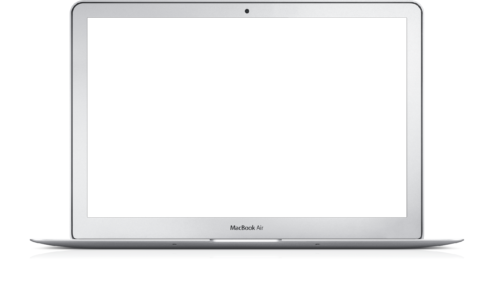
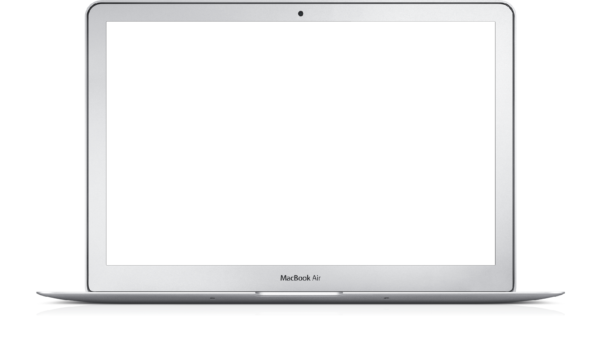

TENTANG
SMK TELKOM
MALANG
SMK Telkom Malang adalah pelopor Sekolah menengah
kejuruan pertama di Indonesia di bidang Teknologi dan
Informatika. Berpengalaman dari tahun 1992 yang telah
terakreditasi "A" dan mempunyai standart mutu
ISO 9001:2008.
 

FASILITAS LENGKAP
Fasilitas penunjang KBM yang lengkap dan berkualitas premium akan memudahkan kalian dalam belajar.
Fasilitas penunjang KBM yang lengkap dan berkualitas premium akan memudahkan kalian dalam belajar.
LINGKUNGAN NYAMAN
Berdiri di lingkungan yang nyaman dan asri sehingga membuat suasana belajar kalian menjadi lebih enjoy.
Berdiri di lingkungan yang nyaman dan asri sehingga membuat suasana belajar kalian menjadi lebih enjoy.
PENGAJAR KOMPETEN
Pengajar yang kompeten dan mampu memberikan kalian kompetensi sesuai perkembangan dan permintaan DU/DI.
Pengajar yang kompeten dan mampu memberikan kalian kompetensi sesuai perkembangan dan permintaan DU/DI.
KERJASAMA PERUSAHAAN
Banyak kerjasama dengan DU/DI sehingga memperluas kesempatan kalian untuk langsung bekerja.
Banyak kerjasama dengan DU/DI sehingga memperluas kesempatan kalian untuk langsung bekerja.
MERAIH PENGHARGAAN
SEKOLAH KERENPertama di Indonesia
program
studi
Kami mempunyai dua program studi unggulan yang banyak dicari oleh industri-industri di dunia IT.
Kami mempunyai dua program studi unggulan yang banyak dicari oleh industri-industri di dunia IT.
rekayasa perangkat lunak
Mempelajari seluruh aspek produksi software seperti aplikasi website, aplikasi android, maupun aplikasi dekstop.
teknik komputer dan jaringan
Mempelajari cara merakit dan instalasi komputer, instalasi jaringan Local Area Network (LAN) dan Wide Area Network (WAN).

Prestasi yang pernah kami raih.
prestasi
kami
Banyak kompetisi di bidang IT maupun non-IT yang banyak diraih oleh siswa-siswi SMK Telkom Malang. Segala prestasi tersebut sangat membanggakan sekolah dan dapat menjadi bekal untuk meraih masa depan yang gemilang.

info
terbaru
Ikuti terus informasi dan berita-berita terbaru tentang SMK Telkom malang.
Ikuti terus informasi dan berita-berita terbaru tentang SMK Telkom malang.
TETAP UP TO DATE
Anda juga bisa mengikuti informasi tebaru SMK Telkom Malang Di Akun Medsos
agenda
terdekat
Beberapa agenda kegiatan SMK Telkom Malang.
Beberapa agenda kegiatan SMK Telkom Malang.
partner
kami
Dukungan dari berbagai pihak.
Dukungan dari berbagai pihak.


Pelopor SMK bidang Teknologi dan Informatika di Indonesia. Berpengalaman dari tahun 1992 yang telah terakreditasi "A" dan mempunyai standart mutu ISO 9001:2008.
Media Sosial
BERITA TERBARU
LOKASI KAMI
-
Jl. Danau Ranau Sawojajar Kota Malang
-
0341-712500
-
info@smktelkom-mlg.sch.id
-
Senin - Jumat
06:15 - 15.30
INSTAGRAM PHOTOSTREAM